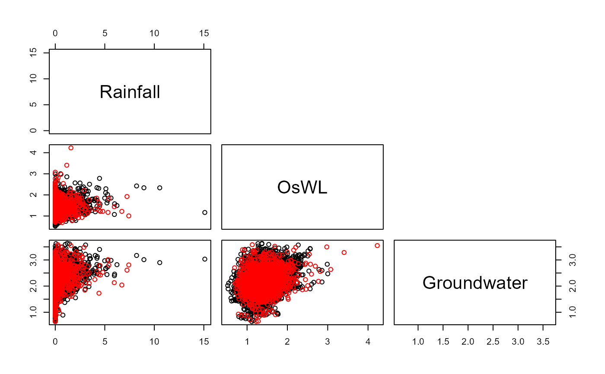

Vine_Copula_Sim.RdSimulating from specified C- and D-vine copula models. Function is a repackaging of the RVineMatrix and RVineMatrix functions from the VineCopula package into a single function.
Vine_Copula_Sim(Data, Vine_Model, Marginals, mu = 365.25, N = 10000)Data frame containing n at least partially concurrent time series. First column may be a "Date" object. Can be Dataframe_Combine output.
An RVineMatrix object i.e., output of Vine_Copula_Fit specifying the structure and copula families composing the vine copula.
An migpd object containing the d-independent generalized Pareto models.
(average) Number of events per year. Numeric vector of length one. Default is 365.25, daily data.
Number of years worth of extremes to be simulated. Numeric vector of length one. Default 10,000 (years).
List comprising an integer vector specifying the pair-copula families composing the C- or D-vine copula Vine_family, its parameters Vine_par and Vine_par2 and type of regular vine Vine_Type. In addition, data frames of the simulated observations: u.Sim on the transformed $[0,1]^n$ and x.Sim the original scales.
#Fitting GPD to independent cluster maxima
S20.Migpd<-Migpd_Fit(Data=S20.Detrend.Declustered.df,
Data_Full=S20.Detrend.df,
mqu=c(0.975,0.975,0.9676))
#Fitting vine copula
S20.Vine<-Vine_Copula_Fit(Data=S20.Detrend.df)
#Simulating from fitted copula
S20.Vine.Sim<-Vine_Copula_Sim(Data=S20.Detrend.df,Vine_Model=S20.Vine,
Marginals=S20.Migpd,N=10)
#> Warning: longer object length is not a multiple of shorter object length
#> Warning: longer object length is not a multiple of shorter object length
#> Warning: longer object length is not a multiple of shorter object length
#Plotting observed (black) and simulated (red) values
S20.Pairs.Plot.Data<-data.frame(rbind(na.omit(S20.Detrend.df[,-1]),S20.Vine.Sim$x.Sim),
c(rep("Observation",nrow(na.omit(S20.Detrend.df))),
rep("Simulation",nrow(S20.Vine.Sim$x.Sim))))
colnames(S20.Pairs.Plot.Data)<-c(names(S20.Detrend.df)[-1],"Type")
pairs(S20.Pairs.Plot.Data[,1:3],
col=ifelse(S20.Pairs.Plot.Data$Type=="Observation","Black","Red"),
upper.panel=NULL)
